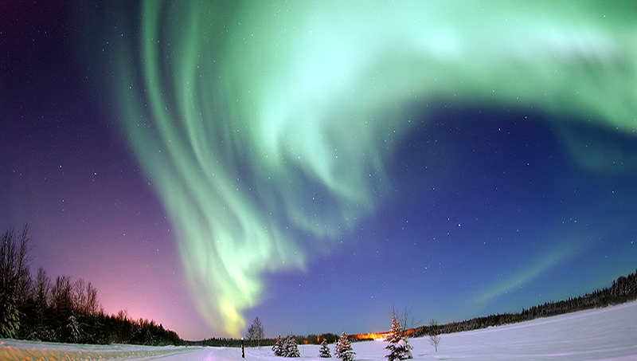
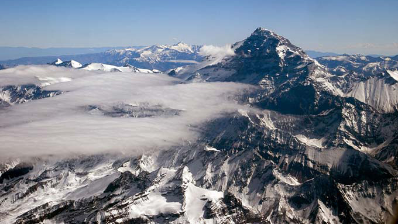

Datos sobre ciencia
Disfrute de nuestros divertidos datos científicos para los niños. Podes aprender datos interesantes sobre la tierra, datos asombrosos sobre la química, datos increíble sobre el espacio, datos divertidos sobre animales y muchas cosas más. ¿Sabías que las orejas de un grillo están ubicadas en sus patas delanteras?
La ciencia es un tema fascinante con muchas cosas asombrosas que aprender y descubrir.
-

Aurora polar
-
Oso panda gigante
-

Mezcla entre agua y aceite
-
Lanzamiento del Transbordador Espacial Nasa
-
Lado oscuro de la Luna
-
Gorilla
-
Cueva de piedra Amatista
-

Planeta Saturno
-
Globos llenos de helio, por eso flotan
-

Aconcagua, montaña en Argentina
Química
-
Al rededor del 1% de la masa solar es oxigeno.
-
Aceite y agua no se mezclan.
-
El helio es más ligero que el aire, por eso flota.
-
Reacciones química ocurren todo el tiempo, incluso en cosas normales, como cocinar.
La Tierra
-
Magma es la roca liquida caliente debajo de la superficie de la Tierra.
-
El desierto más grande del mundo es el Sahara.
-
La selva Amazónica es la selva tropical más grande de la Tierra.
El espacio
-
Venus es el planeta más caliente del Sistema Solar.
-
El sol es 300000 veces más grande que la Tierra.
-
El Sistema Solar se formó hace unos 4.600 millones de años.
-
La Luna orbita la Tierra cada 27,3 días.
Animales
-
Los caballos y las vacas duermen parados.
-
El perro tiene la audición mayor a la de los humanos.
-
Los elefantes son el mamífero terrestre más grande.
-
Los cheetas solo toman agua una vez cada 3 o 4 días.